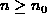
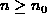

Data Structures and Algorithms
with Object-Oriented Design Patterns in Java
Data Structures and Algorithms
with Object-Oriented Design Patterns in Java
Consider the function f(n)=8n+128 shown in Figure  .
Clearly, f(n) is non-negative for all integers
.
Clearly, f(n) is non-negative for all integers  .
We wish to show that
.
We wish to show that  .
According to Definition ,
in order to show this we need to find an integer
.
According to Definition ,
in order to show this we need to find an integer  and a constant c>0
such that for all integers , .
and a constant c>0
such that for all integers , .
It does not matter what the particular constants are--as long as they exist! For example, suppose we choose c=1. Then
Since (n+8)>0 for all values of  ,
we conclude that
,
we conclude that  .
That is,
.
That is,  .
.
So, we have that for c=1 and  ,
for all integers .
Hence,
,
for all integers .
Hence,  .
Figure clearly shows
that the function is greater than
the function f(n)=8n+128 to the right of n=16.
.
Figure clearly shows
that the function is greater than
the function f(n)=8n+128 to the right of n=16.
Of course, there are many other values of c and  that will do.
For example, c=2
and will do,
as will c=4 and .
(See Figure ).
that will do.
For example, c=2
and will do,
as will c=4 and .
(See Figure ).
 Copyright © 1998 by Bruno R. Preiss, P.Eng. All rights reserved.
Copyright © 1998 by Bruno R. Preiss, P.Eng. All rights reserved.